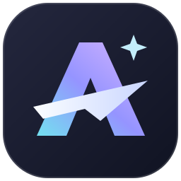

<!doctype html><html lang="zh-CN"><meta charset="utf-8"><meta name="viewport" content="width=device-width,initial-scale=1"><style>
*{box-sizing:border-box}html,body{margin:0;width:100%;height:100%;overflow:hidden;background:#fcfcfd;font-family:"Segoe UI","Microsoft YaHei UI",sans-serif;color:#222735;user-select:none}.card{position:relative;width:100%;height:100%;padding:37px 40px;border:1px solid #e8e9f0;border-radius:28px;overflow:hidden;background:radial-gradient(ellipse at 30% 10%,#fff,#fafbfe 85%)}.brand{width:52px;height:52px;position:relative;z-index:2;filter:drop-shadow(0 6px 8px #24294312)}h1{font-size:31px;letter-spacing:-1.1px;font-weight:540;margin:25px 0 9px;position:relative;z-index:2}.tagline{font-size:11px;color:#8b90a2;letter-spacing:1.1px;position:relative;z-index:2}.art{position:absolute;top:0;right:0;width:69%;height:76%;clip-path:polygon(5% 0,100% 0,100% 100%);overflow:hidden;background:#b2b9f2}.liquid{position:absolute;width:160%;height:160%;left:-30%;top:-35%;background:conic-gradient(from 90deg at 53% 48%,#7d79e4,#b8a6f1,#eed3ed,#f8ccad,#f9e7a5,#b5e4df,#8baeea,#7d79e4);filter:url(#liquid-warp) blur(9px) saturate(1.15);animation:flow 12s cubic-bezier(.45,.05,.35,.95) infinite alternate}.art:after{content:'';position:absolute;inset:0;background:radial-gradient(ellipse at 70% 15%,#ffffff70,transparent 55%);box-shadow:inset 1px 0 #ffffff80}.arc{position:absolute;top:-80px;right:-120px;width:420px;height:290px;border:1px solid #ffffff44;border-radius:50%;transform:rotate(30deg)}footer{position:absolute;bottom:29px;left:40px;right:38px;display:flex;align-items:flex-end;justify-content:space-between;font-size:10px;color:#989eac;letter-spacing:.8px}.status{display:flex;flex-direction:column;align-items:flex-end;gap:10px;letter-spacing:0}.status-row{display:flex;gap:8px;align-items:center;color:#727b8f;font-size:11px}.status-dot{width:5px;height:5px;background:#8a96e8;border-radius:50%;animation:pulse 1.6s ease-in-out infinite}.progress{width:108px;height:2px;background:#e7e9f2;border-radius:4px;overflow:hidden}.progress:after{content:'';display:block;width:40%;height:100%;background:linear-gradient(90deg,#8aa6ec,#b4a0df);animation:progress 1.8s ease-in-out infinite}.close{position:absolute;right:15px;top:14px;z-index:5;border:0;background:#ffffff3d;border-radius:50%;width:25px;height:25px;color:#51566e;cursor:pointer;display:grid;place-items:center}.close:hover{background:#fff9}.close svg{width:11px;height:11px}.retry{display:none;border:0;color:#686dba;background:#eceefa;border-radius:7px;padding:5px 9px;font:inherit;cursor:pointer}body.failed .retry{display:block}body.failed .progress{display:none}body.failed #status{max-width:200px;text-align:right;font-size:10px}body.failed .status-dot{background:#d19c7f;animation:none}@keyframes flow{0%{transform:rotate(-25deg) scale(1) skew(-10deg)}100%{transform:rotate(30deg) scale(1.2) skew(15deg)}}@keyframes progress{from{transform:translateX(-110%)}to{transform:translateX(360%)}}@keyframes pulse{50%{opacity:.35}}@media(prefers-reduced-motion:reduce){*{animation:none!important}}
</style><svg width="0" height="0" style="position:absolute" aria-hidden="true"><defs><filter id="liquid-warp" x="-20%" y="-20%" width="140%" height="140%"><feTurbulence type="fractalNoise" baseFrequency=".009 .018" numOctaves="2" seed="12" result="noise"/><feDisplacementMap in="SourceGraphic" in2="noise" scale="70" xChannelSelector="R" yChannelSelector="G"/></filter></defs></svg><main class="card"><div class="art"><div class="liquid"></div><div class="arc"></div></div><button class="close" title="取消启动" aria-label="取消启动" onclick="window.pywebview?.api.cancel_startup()"><svg viewBox="0 0 16 16" fill="none" stroke="currentColor" stroke-width="1.5"><path d="m3 3 10 10M13 3 3 13"/></svg></button><h1>Astra Agent</h1><div class="tagline">A SPACE FOR WHAT COMES NEXT.</div><footer><span id="version">VERSION 3.11.0</span><div class="status"><div class="status-row"><span class="status-dot"></span><span id="status">正在唤醒工作空间</span></div><div class="progress"></div><button class="retry" onclick="window.pywebview?.api.retry()">重新连接</button></div></footer></main></html>